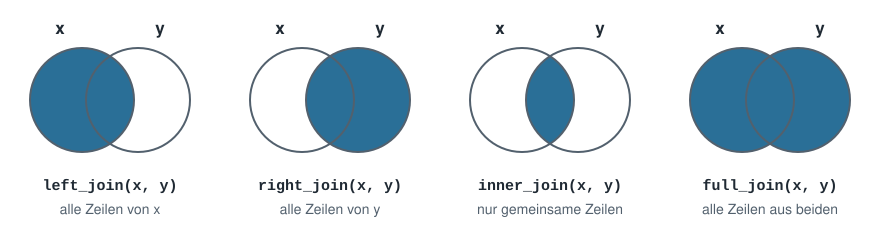
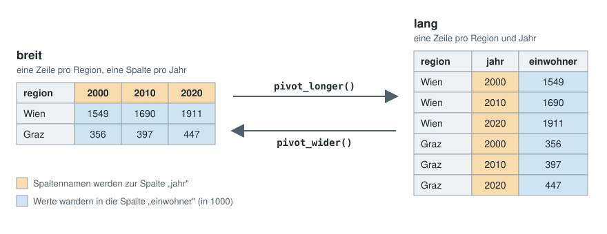
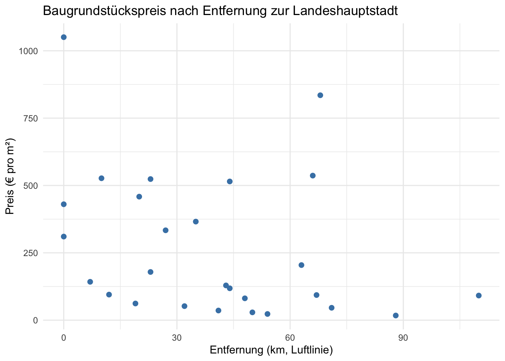
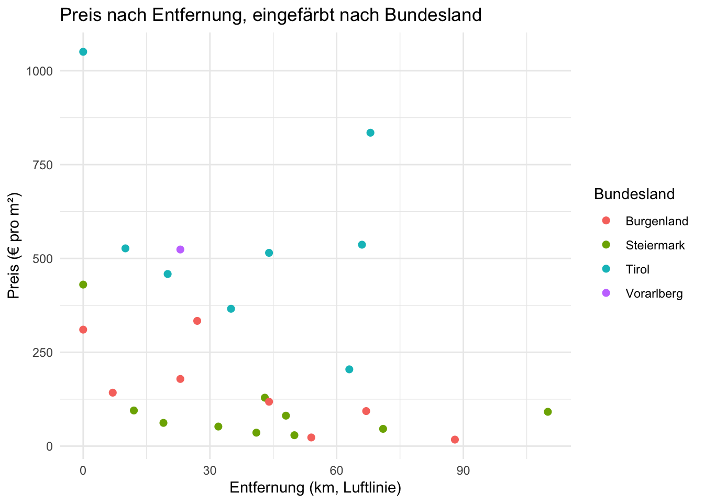
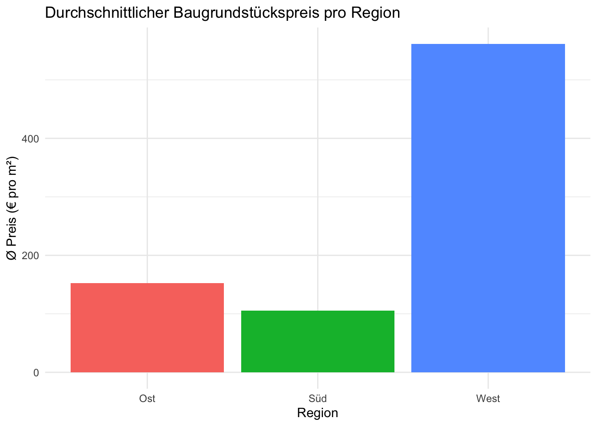
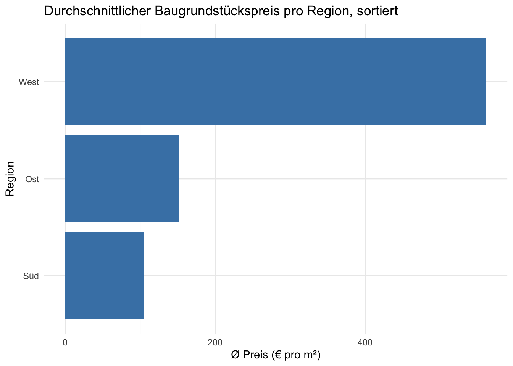
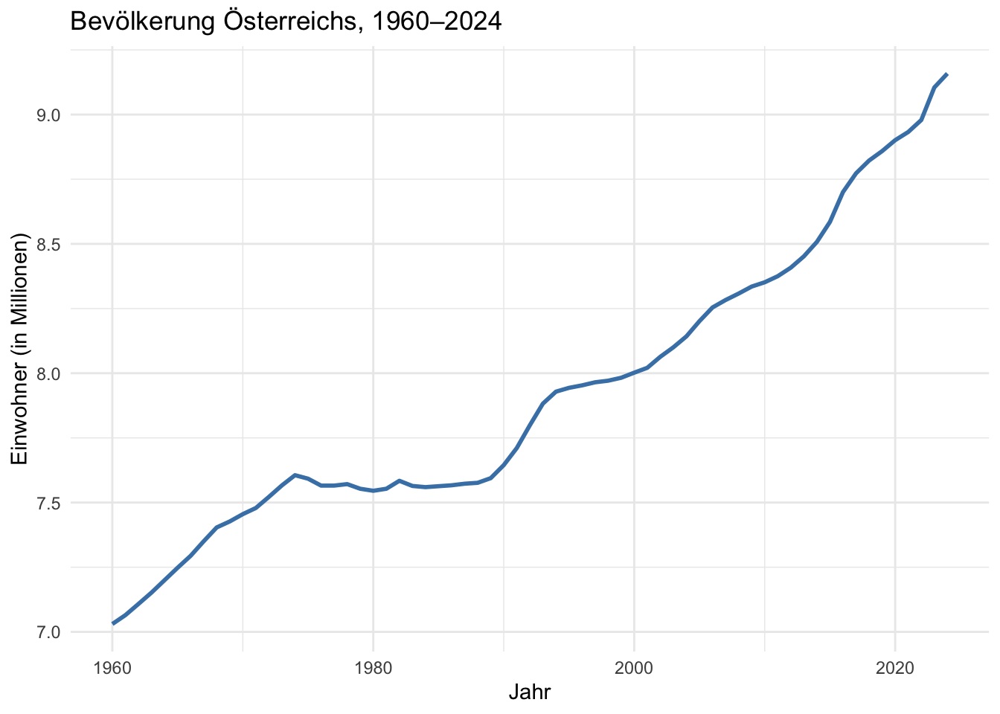
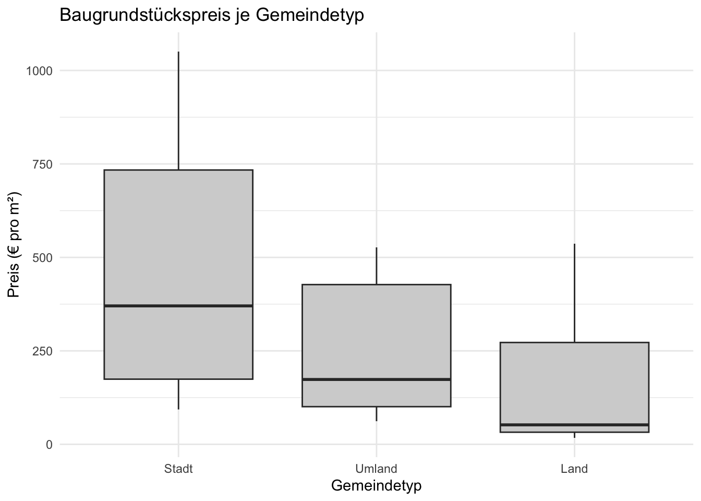
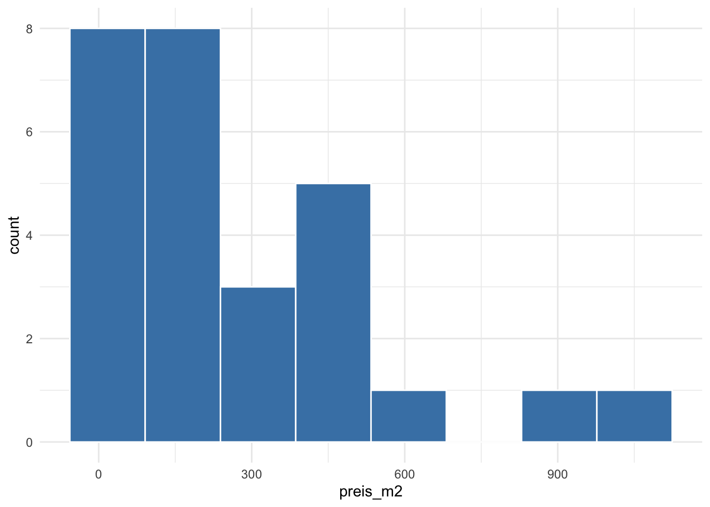
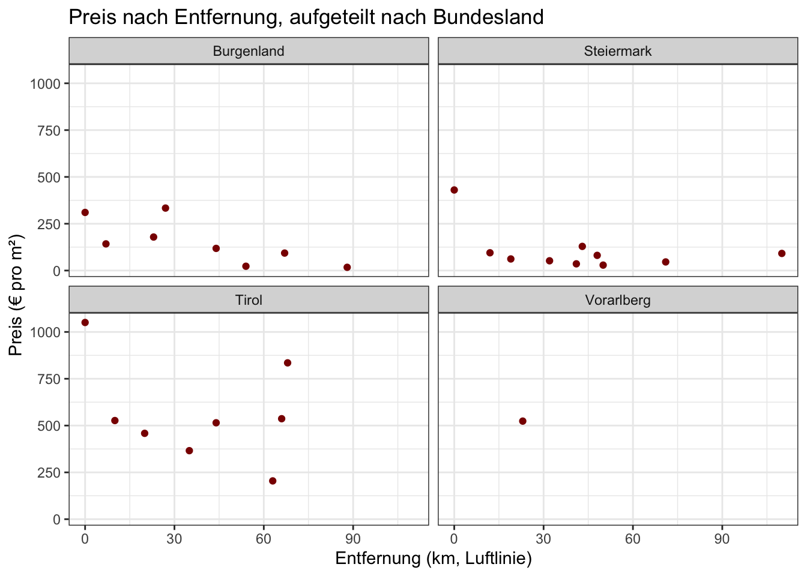

library(dplyr) # Daten bearbeiten
library(tidyr) # Tabellen umformen
library(ggplot2) # GrafikenEinheit 4: Daten auswerten & visualisieren
In Einheit 3 hast du Daten eingelesen und aufgeräumt. Jetzt geht es darum, sie auszuwerten und darzustellen:
- Datenbearbeitung mit
dplyr— filtern, sortieren, neue Spalten berechnen, gruppieren, verbinden, umformen - Visualisierung mit
ggplot2— Grafiken schichtweise aufbauen
Dafür werden drei Pakete gebraucht. Falls noch nicht geschehen, einmalig in der Console installieren: install.packages(c("dplyr", "tidyr", "ggplot2")). Geladen werden Pakete immer am Anfang des Dokuments — so sieht man sofort, was es braucht:
Wir arbeiten mit den Gemeinde-Daten, die du in Einheit 3 schon eingelesen hast: 28 österreichische Gemeinden mit Bundesland, Gemeindetyp, Einwohnerzahl, Fläche, Entfernung zur Landeshauptstadt (Luftlinie in km) und durchschnittlichem Preis für Baugrundstücke (in € pro m²; Quelle: Statistik Austria):
gemeinden <- read.csv("data/raw/gemeinden.csv")
bundeslaender <- read.csv("data/raw/bundeslaender.csv")Bei Ischgl fehlt der Preis (NA) — darauf kommen wir mehrmals zurück.
Teil 1: Datenbearbeitung mit dplyr
dplyr bündelt die typischen Arbeitsschritte in wenige, gut lesbare Funktionen („Verben”). Jedes Verb bekommt einen Data Frame und gibt einen neuen Data Frame zurück.
filter() — Zeilen auswählen
filter(gemeinden, preis_m2 > 400) gkz gemeinde bundesland typ einwohner flaeche_km2 entfernung_km preis_m2
1 70501 Alpbach Tirol Land 2510 58.4 44 514.9
2 60101 Graz Steiermark Stadt 306971 127.6 0 430.3
3 70101 Innsbruck Tirol Stadt 132820 104.9 0 1050.5
4 70513 Kufstein Tirol Stadt 20118 39.4 68 834.9
5 70526 Söll Tirol Land 3784 46.0 66 536.6
6 70933 Terfens Tirol Umland 2326 15.2 20 458.5
7 70361 Unterperfuss Tirol Umland 248 2.2 10 526.8
8 80422 Viktorsberg Vorarlberg Umland 441 12.5 23 523.8filter(gemeinden, typ %in% c("Stadt", "Umland"), entfernung_km <= 20) gkz gemeinde bundesland typ einwohner flaeche_km2 entfernung_km preis_m2
1 10101 Eisenstadt Burgenland Stadt 16396 42.9 0 310.3
2 60101 Graz Steiermark Stadt 306971 127.6 0 430.3
3 70101 Innsbruck Tirol Stadt 132820 104.9 0 1050.5
4 60626 Kumberg Steiermark Umland 3924 29.3 12 94.9
5 61612 Ligist Steiermark Umland 3177 34.6 19 61.9
6 10321 Stotzing Burgenland Umland 839 12.9 7 142.4
7 70933 Terfens Tirol Umland 2326 15.2 20 458.5
8 70361 Unterperfuss Tirol Umland 248 2.2 10 526.8Zeilen, bei denen die Bedingung NA ergibt (hier: Ischgl), fallen bei filter() weg.
select() — Spalten auswählen
select(gemeinden, gemeinde, bundesland, einwohner) gemeinde bundesland einwohner
1 Aigen im Ennstal Steiermark 2756
2 Alpbach Tirol 2510
3 Eisenstadt Burgenland 16396
4 Finkenberg Tirol 1413
5 Forchach Tirol 260
6 Graz Steiermark 306971
7 Innsbruck Tirol 132820
8 Ischgl Tirol 1624
9 Kitzeck im Sausal Steiermark 1137
10 Kufstein Tirol 20118
11 Kumberg Steiermark 3924
12 Leoben Steiermark 24455
13 Ligist Steiermark 3177
14 Moschendorf Burgenland 357
15 Mühlen Steiermark 847
16 Oberwart Burgenland 8130
17 Pama Burgenland 1271
18 Podersdorf am See Burgenland 2129
19 Rohr bei Hartberg Steiermark 1382
20 Söll Tirol 3784
21 Stotzing Burgenland 839
22 Terfens Tirol 2326
23 Traboch Steiermark 1398
24 Unterkohlstätten Burgenland 963
25 Unterperfuss Tirol 248
26 Viktorsberg Vorarlberg 441
27 Weiden am See Burgenland 2560
28 Wies Steiermark 4264arrange() — sortieren
arrange() sortiert nach einer oder mehreren Spalten; desc() dreht die Reihenfolge um:
arrange(gemeinden, desc(preis_m2)) gkz gemeinde bundesland typ einwohner flaeche_km2 entfernung_km preis_m2
1 70101 Innsbruck Tirol Stadt 132820 104.9 0 1050.5
2 70513 Kufstein Tirol Stadt 20118 39.4 68 834.9
3 70526 Söll Tirol Land 3784 46.0 66 536.6
4 70361 Unterperfuss Tirol Umland 248 2.2 10 526.8
5 80422 Viktorsberg Vorarlberg Umland 441 12.5 23 523.8
6 70501 Alpbach Tirol Land 2510 58.4 44 514.9
7 70933 Terfens Tirol Umland 2326 15.2 20 458.5
8 60101 Graz Steiermark Stadt 306971 127.6 0 430.3
9 70908 Finkenberg Tirol Land 1413 171.5 35 365.9
10 10722 Weiden am See Burgenland Umland 2560 32.5 27 333.6
11 10101 Eisenstadt Burgenland Stadt 16396 42.9 0 310.3
12 70810 Forchach Tirol Umland 260 14.3 63 204.5
13 10718 Podersdorf am See Burgenland Land 2129 41.7 23 178.9
14 10321 Stotzing Burgenland Umland 839 12.9 7 142.4
15 61108 Leoben Steiermark Stadt 24455 107.8 43 129.0
16 10715 Pama Burgenland Umland 1271 26.4 44 118.3
17 60626 Kumberg Steiermark Umland 3924 29.3 12 94.9
18 10917 Oberwart Burgenland Stadt 8130 36.5 67 93.3
19 61203 Aigen im Ennstal Steiermark Land 2756 86.4 110 91.4
20 61116 Traboch Steiermark Umland 1398 12.5 48 81.1
21 61612 Ligist Steiermark Umland 3177 34.6 19 61.9
22 61019 Kitzeck im Sausal Steiermark Land 1137 16.3 32 52.1
23 61410 Mühlen Steiermark Land 847 50.8 71 46.0
24 60351 Wies Steiermark Land 4264 76.4 41 35.8
25 62276 Rohr bei Hartberg Steiermark Land 1382 27.7 50 29.0
26 10924 Unterkohlstätten Burgenland Land 963 29.1 54 23.0
27 10428 Moschendorf Burgenland Land 357 13.2 88 17.3
28 70608 Ischgl Tirol Land 1624 103.3 88 NADer Pipe-Operator: %>% und |>
Das Problem: mehrere Schritte hintereinander
Sollen mehrere Funktionen nacheinander angewendet werden, gibt es ohne Pipe zwei Wege — beide sind unhandlich:
# 1. Verschachteln: muss von innen nach außen gelesen werden
arrange(filter(gemeinden, bundesland == "Tirol"), desc(preis_m2)) gkz gemeinde bundesland typ einwohner flaeche_km2 entfernung_km preis_m2
1 70101 Innsbruck Tirol Stadt 132820 104.9 0 1050.5
2 70513 Kufstein Tirol Stadt 20118 39.4 68 834.9
3 70526 Söll Tirol Land 3784 46.0 66 536.6
4 70361 Unterperfuss Tirol Umland 248 2.2 10 526.8
5 70501 Alpbach Tirol Land 2510 58.4 44 514.9
6 70933 Terfens Tirol Umland 2326 15.2 20 458.5
7 70908 Finkenberg Tirol Land 1413 171.5 35 365.9
8 70810 Forchach Tirol Umland 260 14.3 63 204.5
9 70608 Ischgl Tirol Land 1624 103.3 88 NA# 2. Zwischenergebnisse speichern: lesbar, aber viele Hilfsvariablen
nur_tirol <- filter(gemeinden, bundesland == "Tirol")
arrange(nur_tirol, desc(preis_m2)) gkz gemeinde bundesland typ einwohner flaeche_km2 entfernung_km preis_m2
1 70101 Innsbruck Tirol Stadt 132820 104.9 0 1050.5
2 70513 Kufstein Tirol Stadt 20118 39.4 68 834.9
3 70526 Söll Tirol Land 3784 46.0 66 536.6
4 70361 Unterperfuss Tirol Umland 248 2.2 10 526.8
5 70501 Alpbach Tirol Land 2510 58.4 44 514.9
6 70933 Terfens Tirol Umland 2326 15.2 20 458.5
7 70908 Finkenberg Tirol Land 1413 171.5 35 365.9
8 70810 Forchach Tirol Umland 260 14.3 63 204.5
9 70608 Ischgl Tirol Land 1624 103.3 88 NADie Lösung: die Pipe
Der Pipe-Operator nimmt das Ergebnis auf seiner linken Seite und setzt es als erstes Argument in die Funktion auf der rechten Seite ein.
Damit wird aus der Verschachtelung eine Kette, die man von oben nach unten liest. Die Pipe spricht man am besten als „und dann”: Nimm gemeinden, und dann filtere nach Tirol, und dann sortiere nach dem Preis.
gemeinden %>%
filter(bundesland == "Tirol") %>%
arrange(desc(preis_m2)) gkz gemeinde bundesland typ einwohner flaeche_km2 entfernung_km preis_m2
1 70101 Innsbruck Tirol Stadt 132820 104.9 0 1050.5
2 70513 Kufstein Tirol Stadt 20118 39.4 68 834.9
3 70526 Söll Tirol Land 3784 46.0 66 536.6
4 70361 Unterperfuss Tirol Umland 248 2.2 10 526.8
5 70501 Alpbach Tirol Land 2510 58.4 44 514.9
6 70933 Terfens Tirol Umland 2326 15.2 20 458.5
7 70908 Finkenberg Tirol Land 1413 171.5 35 365.9
8 70810 Forchach Tirol Umland 260 14.3 63 204.5
9 70608 Ischgl Tirol Land 1624 103.3 88 NABeachte den Unterschied zu vorher: Ohne Pipe steht der Data Frame als erstes Argument in der Klammer, filter(gemeinden, bundesland == "Tirol"). Mit Pipe lässt man ihn weg, filter(bundesland == "Tirol") — die Pipe setzt ihn automatisch ein.
Zwei Schreibweisen: %>% und |>
In R gibt es nicht nur eine Pipe, sondern zwei: %>% und |>. Du wirst beiden begegnen. Für alles, was in dieser Einführung vorkommt, verhalten sie sich gleich — hier dieselbe Kette mit |>:
gemeinden |>
filter(bundesland == "Tirol") |>
arrange(desc(preis_m2)) gkz gemeinde bundesland typ einwohner flaeche_km2 entfernung_km preis_m2
1 70101 Innsbruck Tirol Stadt 132820 104.9 0 1050.5
2 70513 Kufstein Tirol Stadt 20118 39.4 68 834.9
3 70526 Söll Tirol Land 3784 46.0 66 536.6
4 70361 Unterperfuss Tirol Umland 248 2.2 10 526.8
5 70501 Alpbach Tirol Land 2510 58.4 44 514.9
6 70933 Terfens Tirol Umland 2326 15.2 20 458.5
7 70908 Finkenberg Tirol Land 1413 171.5 35 365.9
8 70810 Forchach Tirol Umland 260 14.3 63 204.5
9 70608 Ischgl Tirol Land 1624 103.3 88 NA%>% |
|> |
|
|---|---|---|
| Name | magrittr-Pipe | native Pipe (eingebaut) |
| Herkunft | Paket magrittr, wird von dplyr mitgeladen |
fester Bestandteil von R seit Version 4.1 (2021) |
| braucht ein Paket? | ja — ohne library(dplyr) gibt es einen Fehler |
nein |
| auf der Tastatur | Strg/Cmd + Shift + M (Standard in RStudio) | dasselbe Kürzel, wenn unter Tools → Global Options → Code „Use native pipe operator” angehakt ist. Von Hand: | mit AltGr + < (Windows) bzw. Option + 7 (Mac), dann > |
%>% war viele Jahre lang die einzige Pipe und steht deshalb in den meisten Büchern, Tutorials und auch in diesem Kurs; neuere Texte verwenden immer öfter |>. Beide sind richtig. Wichtig ist, dass du beide lesen kannst.
Zwei kleine Unterschiede
Für den Anfang selten wichtig, aber gut zu wissen, wenn Code aus dem Netz nicht funktioniert:
- Klammern: Bei
|>muss rechts immer ein Funktionsaufruf mit Klammern stehen.gemeinden %>% headfunktioniert,gemeinden |> headnicht — richtig istgemeinden |> head(). Einfachste Regel: immer Klammern schreiben. - Platzhalter: Soll das Ergebnis nicht an die erste Stelle, markiert man die Stelle mit einem Platzhalter — bei
%>%ein Punkt., bei|>ein Unterstrich_(nur mit Argumentnamen). Beispiel:lm()berechnet eine Regression und erwartet die Daten erst im Argumentdata:
gemeinden %>% lm(preis_m2 ~ entfernung_km, data = .)
Call:
lm(formula = preis_m2 ~ entfernung_km, data = .)
Coefficients:
(Intercept) entfernung_km
389.597 -3.037 gemeinden |> lm(preis_m2 ~ entfernung_km, data = _)
Call:
lm(formula = preis_m2 ~ entfernung_km, data = gemeinden)
Coefficients:
(Intercept) entfernung_km
389.597 -3.037 mutate() — neue Spalten berechnen
mutate() berechnet eine neue Spalte aus bestehenden — elementweise für jede Zeile. Hier die Bevölkerungsdichte, wie in Einheit 1. Gleichwertig in Basis-R wäre gemeinden$dichte <- gemeinden$einwohner / gemeinden$flaeche_km2.
gemeinden <- gemeinden %>%
mutate(dichte = round(einwohner / flaeche_km2))
head(gemeinden) gkz gemeinde bundesland typ einwohner flaeche_km2 entfernung_km preis_m2 dichte
1 61203 Aigen im Ennstal Steiermark Land 2756 86.4 110 91.4 32
2 70501 Alpbach Tirol Land 2510 58.4 44 514.9 43
3 10101 Eisenstadt Burgenland Stadt 16396 42.9 0 310.3 382
4 70908 Finkenberg Tirol Land 1413 171.5 35 365.9 8
5 70810 Forchach Tirol Umland 260 14.3 63 204.5 18
6 60101 Graz Steiermark Stadt 306971 127.6 0 430.3 2406case_when() — Werte nach Bedingungen einteilen
Soll eine neue Spalte je nach Bedingung verschiedene Werte bekommen, nimmt man case_when() in mutate(). Jede Zeile hat die Form bedingung ~ ergebnis; die erste zutreffende Bedingung gewinnt, TRUE ~ fängt alles Übrige auf:
gemeinden <- gemeinden %>%
mutate(preisniveau = case_when(
is.na(preis_m2) ~ NA, # fehlende Werte zuerst abfangen
preis_m2 > 400 ~ "hoch",
preis_m2 > 100 ~ "mittel",
TRUE ~ "niedrig"
))
gemeinden %>% select(gemeinde, preis_m2, preisniveau) %>% head(8) gemeinde preis_m2 preisniveau
1 Aigen im Ennstal 91.4 niedrig
2 Alpbach 514.9 hoch
3 Eisenstadt 310.3 mittel
4 Finkenberg 365.9 mittel
5 Forchach 204.5 mittel
6 Graz 430.3 hoch
7 Innsbruck 1050.5 hoch
8 Ischgl NA <NA>Ohne die erste Zeile würde Ischgl als "niedrig" eingestuft: Die Vergleiche ergeben dort NA, und dann greift TRUE ~.
Mehrere Schritte kombinieren
gemeinden %>%
filter(bundesland == "Tirol") %>%
select(gemeinde, typ, preis_m2) %>%
arrange(desc(preis_m2)) gemeinde typ preis_m2
1 Innsbruck Stadt 1050.5
2 Kufstein Stadt 834.9
3 Söll Land 536.6
4 Unterperfuss Umland 526.8
5 Alpbach Land 514.9
6 Terfens Umland 458.5
7 Finkenberg Land 365.9
8 Forchach Umland 204.5
9 Ischgl Land NAcount() — Häufigkeiten zählen
count() zählt, wie oft jeder Wert vorkommt — das dplyr-Gegenstück zu table():
gemeinden %>% count(bundesland) bundesland n
1 Burgenland 8
2 Steiermark 10
3 Tirol 9
4 Vorarlberg 1group_by() + summarise() — Kennzahlen pro Gruppe
Eine der häufigsten Aufgaben: eine Kennzahl je Gruppe — z. B. der durchschnittliche Preis pro Bundesland.
gemeinden %>%
group_by(bundesland) %>%
summarise(
anzahl = n(),
preis_mean = mean(preis_m2),
einwohner_max = max(einwohner)
)# A tibble: 4 × 4
bundesland anzahl preis_mean einwohner_max
<chr> <int> <dbl> <int>
1 Burgenland 8 152. 16396
2 Steiermark 10 105. 306971
3 Tirol 9 NA 132820
4 Vorarlberg 1 524. 441Die Ausgabe beginnt mit # A tibble — mehr dazu im Kasten.
HinweisWas ist ein Tibble?
Ein Tibble ist eine modernere Variante des Data Frames. Viele Funktionen aus dplyr, tidyr und readxl geben einen zurück. Du kannst damit arbeiten wie mit jedem Data Frame; drei Dinge sind anders:
- Die Anzeige: Oben stehen Größe (
4 × 4) und unter jedem Spaltennamen der Datentyp (<chr>,<int>,<dbl>). Gezeigt werden nur die ersten zehn Zeilen und so viele Spalten, wie Platz haben — alles sieht man mitView()oderprint(n = Inf). - Eine Spalte auswählen:
tabelle[, "spalte"]liefert bei einem Tibble wieder eine Tabelle, bei einem Data Frame einen Vektor. Mittabelle$spaltebekommt man in beiden Fällen den Vektor. - Umwandeln:
as.data.frame()macht aus einem Tibble einen gewöhnlichen Data Frame,as_tibble()geht den umgekehrten Weg.
Bei Tirol steht NA, weil der Preis von Ischgl fehlt (siehe Einheit 1, Fehlende Werte: NA). Mit na.rm = TRUE wird der fehlende Wert ausgelassen:
gemeinden %>%
group_by(bundesland) %>%
summarise(anzahl = n(), preis_mean = mean(preis_m2, na.rm = TRUE))# A tibble: 4 × 3
bundesland anzahl preis_mean
<chr> <int> <dbl>
1 Burgenland 8 152.
2 Steiermark 10 105.
3 Tirol 9 562.
4 Vorarlberg 1 524.Datensätze verbinden: Joins
bundeslaender enthält zu jedem Bundesland die Region (Ost-, Süd- oder Westösterreich). Mit einem Join wird diese Information über die gemeinsame Spalte bundesland an gemeinden angehängt.
Die Datensätze passen nicht perfekt zusammen — wie so oft in der Praxis (hier haben wir es für den Kurs so eingerichtet):
- Viktorsberg liegt in Vorarlberg, das in
bundeslaenderfehlt. - Salzburg steht in
bundeslaender, hat aber keine Gemeinden im Datensatz.
Die vier Join-Varianten unterscheiden sich genau darin, was mit solchen Zeilen passiert:
| Funktion | Behält |
|---|---|
left_join(x, y) |
alle Zeilen von x; fehlt die Entsprechung in y → NA |
right_join(x, y) |
alle Zeilen von y |
inner_join(x, y) |
nur Zeilen, die in beiden vorkommen |
full_join(x, y) |
alle Zeilen aus beiden |

nrow(left_join(gemeinden, bundeslaender, by = "bundesland")) # alle 28 Gemeinden, Viktorsberg mit Region NA[1] 28nrow(inner_join(gemeinden, bundeslaender, by = "bundesland")) # 27 — Viktorsberg fällt weg[1] 27nrow(full_join(gemeinden, bundeslaender, by = "bundesland")) # 29 — alle Gemeinden + Salzburg[1] 29Meist will man keine Zeilen verlieren, deshalb ist left_join() der Standard:
gemeinden_join <- gemeinden %>%
left_join(bundeslaender, by = "bundesland")
gemeinden_join %>% filter(is.na(region)) gkz gemeinde bundesland typ einwohner flaeche_km2 entfernung_km preis_m2 dichte preisniveau region
1 80422 Viktorsberg Vorarlberg Umland 441 12.5 23 523.8 35 hoch <NA>Über mehrere Spalten verbindet man mit by = c("spalte1", "spalte2"). In Basis-R heißt die Funktion merge() (merge(x, y, by = "bundesland", all.x = TRUE) entspricht left_join).
Breite und lange Tabellen: pivot_longer() und pivot_wider()
Dieselben Daten lassen sich auf zwei Arten anordnen. Ein kleines Beispiel: die Einwohnerzahl von Wien und Graz in drei Jahren — sechs Zahlen, einmal breit und einmal lang.

- breit: eine Zeile pro Region, eine Spalte pro Jahr. So liest man Tabellen gern, und so liefern sie viele Statistikämter. Das Jahr steckt hier aber im Spaltennamen — R kann nicht danach filtern oder gruppieren.
- lang: eine Zeile pro Region und Jahr; jede Zeile ist eine einzelne Beobachtung. Das Jahr ist eine eigene Spalte, mit der
filter(),group_by()undggplot2arbeiten können.
Faustregel: Stehen in den Spaltennamen Werte (Jahre, Monate, Kategorien) statt Namen von Variablen, ist die Tabelle breit.
Zum Umformen gibt es das Paket tidyr. Als Beispiel dient ein Originalexport aus der ARDECO-Datenbank der Europäischen Kommission: die Bevölkerung am 1. Jänner für 36 Staaten und ihre NUTS-3-Regionen — die Quelle, aus der auch die Daten für Übungsaufgabe 1 stammen. Die Tabelle ist breit:
bev_breit <- read.csv("data/raw/ardeco_bevoelkerung.csv")
dim(bev_breit) # Zeilen und Spalten: 75 Spalten sind zu viele, um alle anzuzeigen[1] 1374 75# die ersten drei Zeilen, nur die Namensspalten und die ersten drei Jahre
bev_breit[1:3, c("TERRITORY_ID", "NAME_HTML", "X1960", "X1961", "X1962")] TERRITORY_ID NAME_HTML X1960 X1961 X1962
1 AL Albania 1583800 1633800 1685800
2 AT Austria 7030385 7064693 7107904
3 BE Belgium 9128824 9178154 9189741Jedes Jahr von 1960 bis 2027 ist eine eigene Spalte. Weil Spaltennamen in R nicht mit einer Ziffer beginnen dürfen, hat read.csv() ein X davorgesetzt (X1960).
pivot_longer() macht aus vielen Spalten zwei: eine für die bisherigen Spaltennamen (names_to, im Bild orange) und eine für die Werte (values_to, im Bild blau). cols legt fest, welche Spalten gemeint sind — hier alle, die mit X beginnen:
bev_lang <- bev_breit %>%
pivot_longer(cols = starts_with("X"), names_to = "jahr", values_to = "einwohner",
names_prefix = "X") %>% # das X vor der Jahreszahl entfernen
mutate(jahr = as.integer(jahr)) %>% # "1960" (Text) -> 1960 (Zahl)
select(TERRITORY_ID, NAME_HTML, jahr, einwohner)
dim(bev_lang) # jetzt viel mehr Zeilen, aber nur vier Spalten[1] 93432 4head(bev_lang, 3)# A tibble: 3 × 4
TERRITORY_ID NAME_HTML jahr einwohner
<chr> <chr> <int> <dbl>
1 AL Albania 1960 1583800
2 AL Albania 1961 1633800
3 AL Albania 1962 1685800Aus 1374 Zeilen mit 68 Jahresspalten sind 1374 · 68 = 93 432 Zeilen geworden. Jetzt lässt sich nach dem Jahr filtern wie nach jeder anderen Spalte.
pivot_wider() geht den umgekehrten Weg: Die Werte einer Spalte (names_from, orange) werden zu Spaltennamen, eine zweite Spalte (values_from, blau) füllt die Zellen — praktisch, um Jahre nebeneinander zu stellen und zu vergleichen:
bev_lang %>%
filter(TERRITORY_ID %in% c("AT", "AT130"), jahr %in% c(1960, 1990, 2020)) %>%
pivot_wider(names_from = jahr, values_from = einwohner, names_prefix = "einwohner_")# A tibble: 2 × 5
TERRITORY_ID NAME_HTML einwohner_1960 einwohner_1990 einwohner_2020
<chr> <chr> <dbl> <dbl> <dbl>
1 AT Austria 7030385 7644818 8901064
2 AT130 Wien 1618135 1492636 1911191Übung
- Welche drei Gemeinden haben die meisten Einwohner? Zeige nur
gemeindeundeinwohner. - Zeige für die Tiroler Gemeinden
gemeinde,typund die Bevölkerungsdichte (Einwohner pro km², gerundet), sortiert von der dichtesten zur dünnsten. - Berechne pro
typdie Anzahl Gemeinden und den durchschnittlichen Preis, absteigend sortiert nach dem Durchschnitt. Was fällt auf? - Verbinde
gemeindenmitbundeslaenderund berechne den durchschnittlichen Preis proregion. Für welche Gemeinde fehlt die Region — und warum? - Erstelle aus
bev_langeine breite Tabelle mit den Einwohnern von 1990 und 2024 für Österreich (AT), Deutschland (DE) und die Schweiz (CH). Um wie viel Prozent ist die Bevölkerung jeweils gewachsen?
# dein CodeTeil 2: Visualisierung mit ggplot2
Die Daten vorbereiten
Wir verwenden gemeinden_join aus Teil 1 (Gemeinden mit Region). Bei Ischgl fehlt der Preis. Ohne y-Wert kann ggplot keinen Punkt zeichnen und würde bei jeder Grafik warnen („Removed 1 row containing missing values”). Deshalb entfernen wir diese Zeile einmal vorab.
Außerdem machen wir typ zu einem Faktor mit sinnvoller Reihenfolge (siehe Einheit 2, Faktoren) — sonst sortiert ggplot die Gemeindetypen alphabetisch:
gemeinden_plot <- gemeinden_join %>%
filter(!is.na(preis_m2)) %>%
mutate(typ = factor(typ, levels = c("Stadt", "Umland", "Land")))Der Grundaufbau
ggplot2 baut Grafiken schichtweise mit + auf. Der Grundaufbau ist immer gleich:
ggplot(daten, aes(x = ..., y = ...)) + # Daten + welche Spalte auf welche Achse
geom_...() # welche Form: Punkte, Balken, Linien …Streudiagramm: geom_point()
ggplot(gemeinden_plot, aes(x = entfernung_km, y = preis_m2)) +
geom_point(color = "steelblue", size = 2) +
labs(title = "Baugrundstückspreis nach Entfernung zur Landeshauptstadt",
x = "Entfernung (km, Luftlinie)", y = "Preis (€ pro m²)") +
theme_minimal()
Die Punkte streuen stark: Teure Gemeinden gibt es nahe an der Landeshauptstadt, aber auch 70 km entfernt. Ein klarer Zusammenhang ist so noch nicht zu erkennen.
Nach Gruppe einfärben
Eine weitere Spalte in aes() auf color legen — ggplot vergibt automatisch Farben und eine Legende:
ggplot(gemeinden_plot, aes(x = entfernung_km, y = preis_m2, color = bundesland)) +
geom_point(size = 2) +
labs(title = "Preis nach Entfernung, eingefärbt nach Bundesland",
x = "Entfernung (km, Luftlinie)", y = "Preis (€ pro m²)", color = "Bundesland") +
theme_minimal()
Jetzt wird das Muster sichtbar: In Tirol und Vorarlberg ist Bauland durchwegs viel teurer als im Burgenland und in der Steiermark. Im Burgenland und in der Steiermark sinkt der Preis mit der Entfernung zur Landeshauptstadt. In Tirol ist das Bild uneinheitlich: Kufstein ist teuer, obwohl es fast 70 km von Innsbruck entfernt liegt.
color = "steelblue" außerhalb von aes() setzt eine feste Farbe; color = bundesland innerhalb von aes() färbt nach den Werten einer Spalte.
Balkendiagramm einer Kennzahl: geom_col()
dplyr und ggplot2 greifen ineinander: erst die Kennzahl berechnen, dann direkt an ggplot() weiterreichen. Gemeinden ohne Region (Viktorsberg) filtern wir vorher heraus. Die Farbe dient hier nur der Optik — die Regionen stehen schon auf der x-Achse, deshalb blenden wir die Legende mit show.legend = FALSE aus:
gemeinden_plot %>%
filter(!is.na(region)) %>%
group_by(region) %>%
summarise(preis_mean = mean(preis_m2)) %>%
ggplot(aes(x = region, y = preis_mean, fill = region)) +
geom_col(show.legend = FALSE) +
labs(title = "Durchschnittlicher Baugrundstückspreis pro Region",
x = "Region", y = "Ø Preis (€ pro m²)") +
theme_minimal()
Die Balken stehen in alphabetischer Reihenfolge. reorder(region, preis_mean) sortiert sie nach der Kennzahl. Bei vielen Balken oder langen Namen dreht coord_flip() die Grafik, sodass die Beschriftung waagrecht steht:
gemeinden_plot %>%
filter(!is.na(region)) %>%
group_by(region) %>%
summarise(preis_mean = mean(preis_m2)) %>%
ggplot(aes(x = reorder(region, preis_mean), y = preis_mean)) +
geom_col(fill = "steelblue") +
coord_flip() +
labs(title = "Durchschnittlicher Baugrundstückspreis pro Region, sortiert",
x = "Region", y = "Ø Preis (€ pro m²)") +
theme_minimal()
Zeitverläufe: geom_line()
Für eine Entwicklung über die Zeit verbindet geom_line() die Werte zu einer Linie. Dafür braucht es das lange Format — das Jahr als eigene Spalte, wie in bev_lang aus Teil 1. Die Werte nach 2024 sind Prognosen, deshalb lassen wir sie weg:
bev_lang %>%
filter(TERRITORY_ID == "AT", jahr <= 2024) %>%
ggplot(aes(x = jahr, y = einwohner / 1000000)) +
geom_line(color = "steelblue", linewidth = 1) +
labs(title = "Bevölkerung Österreichs, 1960–2024",
x = "Jahr", y = "Einwohner (in Millionen)") +
theme_minimal()
Für mehrere Linien in einer Grafik legt man eine Spalte auf color, z. B. aes(x = jahr, y = einwohner, color = NAME_HTML).
Verteilungen: geom_boxplot() und geom_histogram()
ggplot(gemeinden_plot, aes(x = typ, y = preis_m2)) +
geom_boxplot(fill = "lightgrey") +
labs(title = "Baugrundstückspreis je Gemeindetyp", x = "Gemeindetyp", y = "Preis (€ pro m²)") +
theme_minimal()
geom_histogram() zeigt die Verteilung einer einzelnen Zahlenspalte:
ggplot(gemeinden_plot, aes(x = preis_m2)) +
geom_histogram(bins = 8, fill = "steelblue", color = "white") +
theme_minimal()
Teilgrafiken: facet_wrap()
facet_wrap(~spalte) zerlegt eine Grafik in ein Raster — eine Teilgrafik pro Ausprägung:
ggplot(gemeinden_plot, aes(x = entfernung_km, y = preis_m2)) +
geom_point(color = "darkred") +
facet_wrap(~bundesland) +
labs(title = "Preis nach Entfernung, aufgeteilt nach Bundesland",
x = "Entfernung (km, Luftlinie)", y = "Preis (€ pro m²)") +
theme_bw()
Vorarlberg ist nur mit einer Gemeinde vertreten, deshalb steht dort ein einzelner Punkt.
Grafik speichern: ggsave()
ggsave() speichert die zuletzt erzeugte Grafik:
ggsave("output/preis_entfernung.png", width = 8, height = 5)Weitere Möglichkeiten entdecken
ggplot2 kann viel mehr, als hier Platz hat. Zum Nachschlagen und Ausprobieren:
- ggplot2-Referenz — alle
geom_...(), Skalen und Themes mit Beispielen - ggplot2-Cheatsheet — die wichtigsten Bausteine auf einen Blick
- R Graph Gallery — Grafiktypen mit fertigem Code
Übung
Jede Grafik bekommt einen Titel und beschriftete Achsen.
- Zeichne ein Streudiagramm von
entfernung_kmgegenpreis_m2, eingefärbt nachtyp. - Zeichne den durchschnittlichen Preis pro Bundesland als Balkendiagramm, sortiert vom niedrigsten zum höchsten Wert (Tipp: erst
group_by()+summarise(), dannreorder()). - Zeichne aus
bev_langdie Bevölkerung der Regionen Graz (AT221) und Östliche Obersteiermark (AT223) von 1960 bis 2024 als zwei Linien in einer Grafik. Was zeigt der Vergleich?
# dein Code